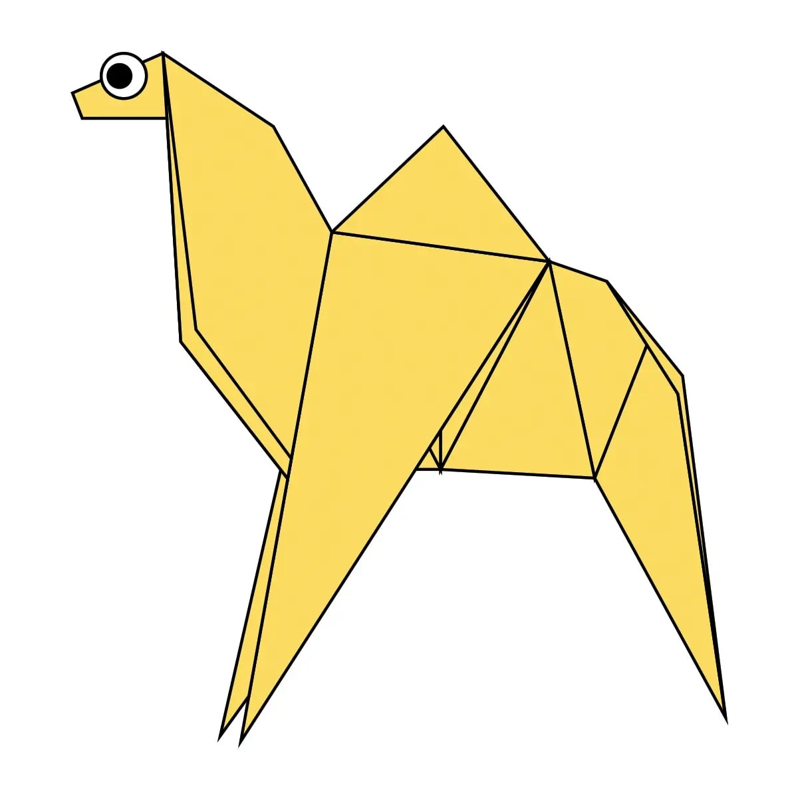
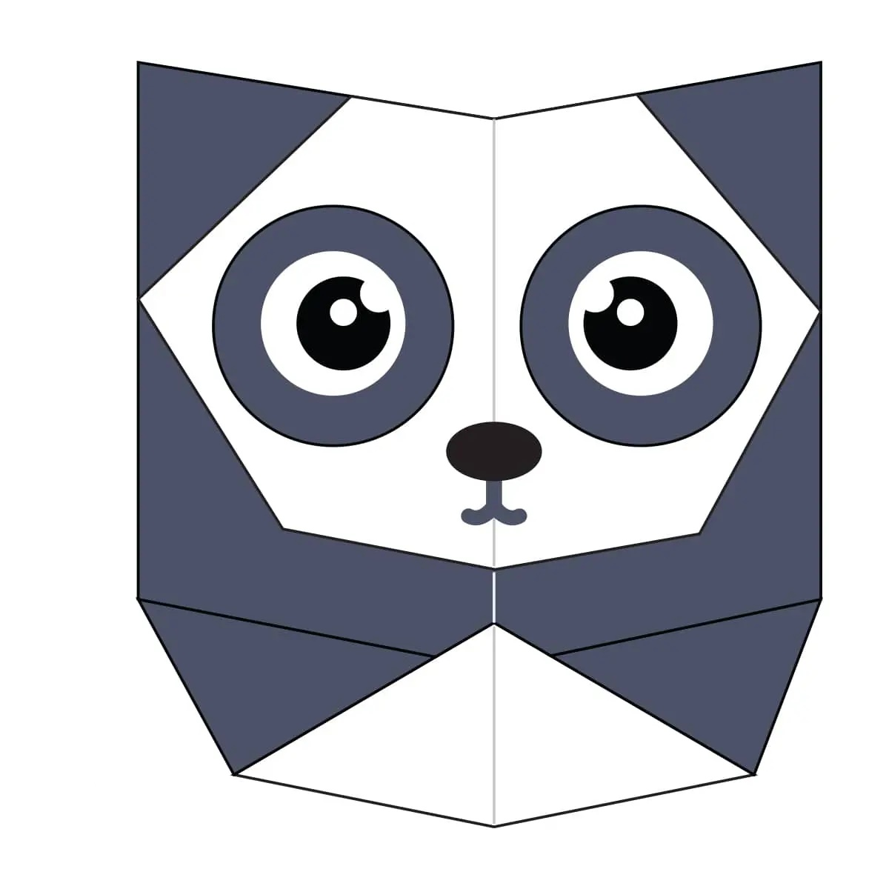
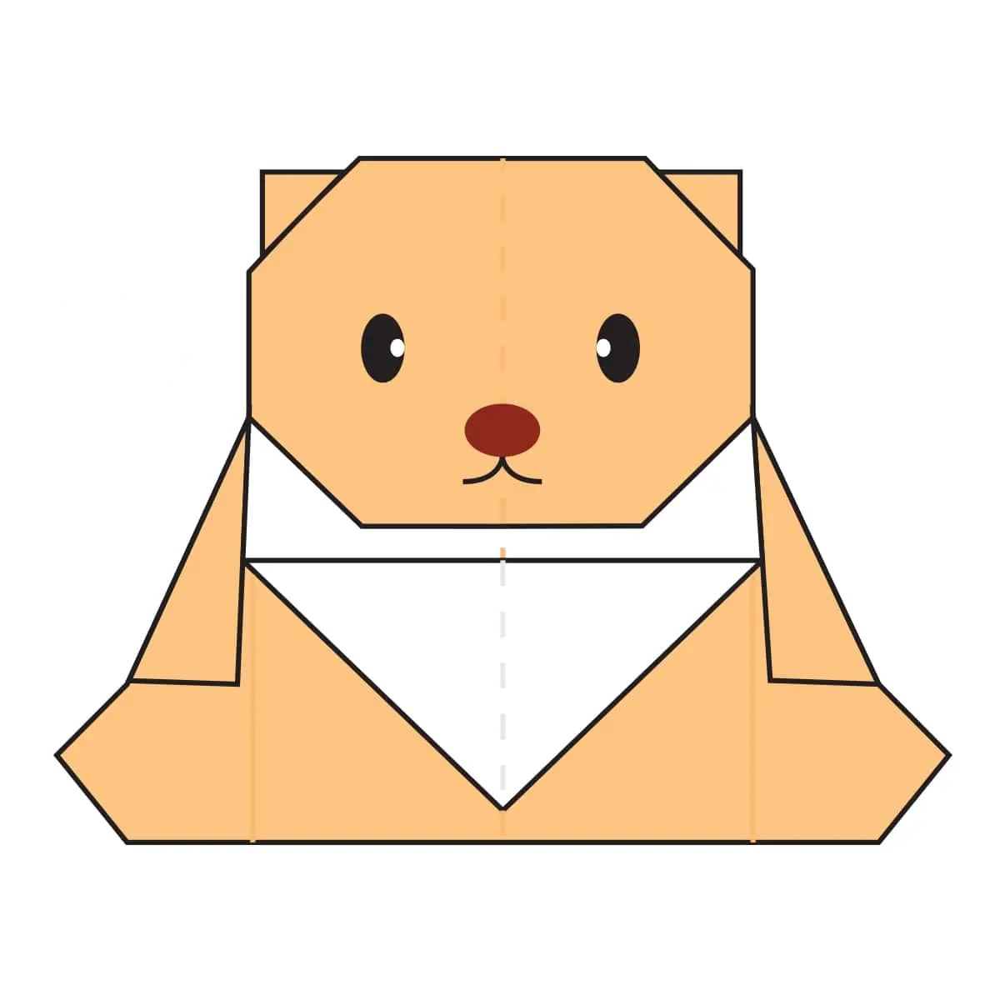

Origami Designs
About Us
Follow Us

Interesting Facts About Camel
1: There are two types of camels: One humped or “dromedary” camels and two humped Bactrian camels.
2: Camels have three sets of eyelids and two rows of eyelashes to keep sand out of their eyes.
3: Camels have thick lips which let them forage for thorny plants other animals can't eat.

Interesting Facts About Chameleon
1: The feet of chameleon work like salad tongs.
2: Chameleons are very wild in terms of size.
3: They mainly change color in order to communicate or regulate body temperature.

Interesting Facts About Pigeon
1: Pigeons are incredibly complex and intelligent animals.
2: Pigeons are renowned for their outstanding navigational abilities.
3: Pigeons are highly sociable animals.

Interesting Facts About Panda
1: A giant panda is much bigger than your teddy bear.
2: Giant pandas are good at climbing trees and can also swim.
3: Pandas go from pink to white and black (or brown).

Interesting Facts About Teddy
1: A teddy bear is a stuffed toy in the form of a bear.
2: Developed apparently simultaneously by toymakers Morris Michtom in the U.S. and Richard Steiff in Germany in the early years of the 20th century.
3: It was named after President Theodore "Teddy" Roosevelt, the teddy bear became a popular children's toy.

Interesting Facts About Cicada
1: Cicadas can survive a huge fall as babies, or nymphs.
2: The loud whirring or buzzing sound you hear is an all-male cicada chorus.
3: Most cicadas have red-orange eyes.